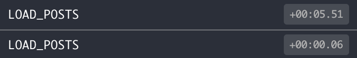

React.js에 redux 및 redux-saga를 얹어 사용하면서 느낀 피로감을 최소화하고자 노력한 결과가 제 나름으론 만족스럽게 나와 공유하고자 합니다.
패키지 구조 redux-saga를 보다 쉽게 사용하고자 하는 데에 포커스를 맞춘 연습용 프로젝트로, 디펜던시는 다음과 같습니다.
1 2 3 4 5 6 7 8 9 { "react" : "^17.0.1" , "react-dom" : "^17.0.1" , "redux" : "^4.0.5" , "react-redux" : "^7.2.2" , "redux-saga" : "^1.1.3" , "immer" : "^7.0.14" , "axios" : "^0.21.0" , }
1. action 1) 비동기 상태관리에 대한 불만 요소 리덕스를 사용하다 보면 액션명을 생성하는 데에 반복이 너무나 많아 불만이었습니다. 무엇보다 비동기처리를 위해서 동일한 액션명에 대해 ‘_REQUEST’, ‘_SUCCESS’, ‘_FAILURE’와 같이 요청과 응답성공, 응답실패의 세가지 케이스를 모두 만들어야 한다는 점이 가장 힘들었습니다.
1 2 3 4 5 6 7 8 9 10 const userActions = { LOGIN_REQUEST : 'LOGIN_REQUEST' , LOGIN_SUCCESS : 'LOGIN_SUCCESS' , LOGIN_FAILURE : 'LOGIN_FAILURE' , LOGOUT_REQUEST : 'LOGOUT_REQUEST' , LOGOUT_SUCCESS : 'LOGOUT_SUCCESS' , LOGOUT_FAILURE : 'LOGOUT_FAILURE' , ... }
1 2 3 4 5 6 7 8 9 10 11 const userReducer = (state, action ) => { switch (action.type ) { case userActions.LOGIN_REQUEST : ... case userActions.LOGIN_SUCCESS : ... case userActions.LOGIN_FAILURE : ... case userActions.LOGOUT_REQUEST : ... case userActions.LOGOUT_SUCCESS : ... case userActions.LOGOUT_FAILURE : ... } }
2) status 프로퍼티로 관리 이에 가장 먼저 생각한 방법은 action은 하나만 둔 상태에서 ‘status’ 프로퍼티로 비동기 처리의 상태를 관리하는 것이었습니다. 그랬더니 이번에는 reducer가 골치입니다. 최상단에서는 간결해졌지만 그래봤자 내부에서는 다시 switch case를 태워야 하나? 좀 아닌 것 같지만, 해보고 나서 생각하자 싶어 일단은 진행합니다.
1 2 3 4 5 6 const userActions = { LOGIN : 'LOGIN' , LOGOUT : 'LOGOUT' , ... }
1 2 3 4 5 6 7 8 9 10 11 12 13 14 15 16 17 18 19 const userReducer = (state, action ) => { switch (action.type ) { case userActions.LOGIN : { switch (action.data .status ) { case REQUEST : ... case SUCCESS : ... case FAILURE : ... } } case userActions.LOGOUT : { switch (action.data .status ) { case REQUEST : ... case SUCCESS : ... case FAILURE : ... } } } }
역시나 이건 아니다 싶네요. 반복되는 REQUEST, SUCCESS, FAILURE에 대한 처리를 보다 효율적으로 할 수 있는 방안이 필요해 보입니다. 고민 끝에 적절한 방안을 찾아내긴 했습니다만 이에 대해서는 reducer 파트에서 자세히 소개하기로 하고, 지금은 일단 action 파트에 집중하겠습니다. 어쩄든 action명의 뒷부분을 과감히 덜어내고 reducer 쪽의 고민도 해결하고 보니, 이번엔 또 전혀 새로운 단점이 눈에 들어왔습니다. redux를 사용할 때 얻는 가장 큰 이점 중 하나는 뭐니뭐니 해도 redux-devtool일텐데요,

action명만 보고는 이게 어떤 동작인지를 유추조차 할 수가 없습니다. 일일이 액션 하나하나를 열어보아야만이 요청인지 성공인지 실패인지를 알 수 있어 몹시 불편합니다. 역시나 아니다 싶네요. 단순반복을 ‘아주 약간’ 피하는 대신 디버깅에서는 치명적인 단점으로 보이기까지 합니다.
3) suffix 자동 부여 ‘결국은 하나의 동작에 대해 여러개의 액션을 만드는 수밖에 없나’ 하며 풀 죽어 있다가, (redux-promise-middleware )에서 힌트를 얻었습니다. 생각해보면 사용자 입장에서 직접 action을 dispatch해야 하는 경우는 오직 ‘REQUEST’할 때 뿐이고, 나머지는 서버의 응답에 따라 자동으로 동작하게끔 처리해줘야 하는 것들입니다. 이를 위해서 redux-saga를 사용하는 것이니, 이들에 대해서까지 action 명을 굳이 직접 만들어야 할 이유가 없는 셈이기도 하죠! 자동으로 동작할 액션들은 자동으로 부여하도록 해주면 될 일이었습니다.
1 2 3 4 5 6 const userActions = { LOGIN : 'LOGIN' , LOGOUT : 'LOGOUT' , ... }
1 2 3 4 5 6 7 8 9 10 11 12 13 14 15 16 17 18 19 20 21 22 import { all, put, takeLatest } from 'redux-saga/effects' import axios from 'axios' const login = function *(action) { try { const result = yield axios.post ('/user/login' , action.data ) yield put ({ type : `LOGIN__success` , data : result.data , }) } catch (err) { yield put ({ type : `LOGIN__failure` , data : result.data , }) } } export default function userSaga*() { yield all ([ takeLatest (userActions.LOGIN , login) ]) }
1 2 3 4 5 6 7 8 const userReducer = (state, action ) => { switch (action.type ) { case userActions.LOGIN : ... case userActions.LOGIN__success : ... case userActions.LOGIN__failure : ... } }
대충 이런 식으로 하면 처음보다는 그래도 숨통이 트이는 느낌이네요. reducer는 변화가 없긴 하지만, 이 부분은 따로 처리하면 될 일이니까요. 나아가 굳이 action은 별도의 ‘action’ 폴더에 두지 않고 root로 옮겨 actions.js 파일 하나로 관리하도록 하였습니다. store 프로퍼티명에 대응하는 actions 변수 안에 각 액션명들로 구성된 배열들을 만들고, 이들을 한 데 모아 { LOGIN: 'LOGIN', ...}와 같이 하나의 객체로 export 하도록 처리하였습니다. 규모가 커져서 액션이 많을 수밖에 없다면 action 폴더를 만드는 편이 낫겠지만, 지금으로선 이정도로 충분해 보입니다.
1 2 3 4 5 6 7 8 9 10 11 12 13 14 15 16 17 18 const userActions = [ 'LOGIN' , 'LOGOUT' , ... ] const postActions = [ 'ADD_POST' , 'REMOVE_POST' , ... ] export default [ ...userActions, ...postActions ].reduce ((a, c ) => { a[c] = c return a }, {})
2. saga 1) saga 파일에 대한 불만 요소 saga 파트에서 가장 불만스러운 부분은, try catch로 감싸는 처리가 매번 반복된다는 점입니다.
1 2 3 4 5 6 7 8 9 10 11 12 13 14 15 16 17 18 19 20 21 22 23 24 25 26 27 28 29 30 31 32 33 34 35 36 37 38 import { all, put, takeLatest } from 'redux-saga/effects' import axios from 'axios' import Actions from '../actions' const login = function *(action) { try { const result = yield axios.post ('/user/login' , action.data ) yield put ({ type : `${Actions.LOGIN} __success` , data : result.data , }) } catch (err) { yield put ({ type : `${Actions.LOGIN} __failure` , data : err.response .data , }) } } const logout = function *(action) { try { const result = yield axios.post ('/user/logout' ) yield put ({ type : `${Actions.LOGOUT} __success` , }) } catch (err) { yield put ({ type : `${Actions.LOGOUT} __failure` , data : err.response .data , }) } } export default function userSaga*() { yield all ([ takeLatest (Actions .LOGIN , login), takeLatest (Actions .LOGOUT , logout), ]) }
2) taker 함수로 공통요소 처리 가만 보니 ‘LOGIN’에 대한 대응 액션은 ‘LOGIN__success’, ‘LOGIN__failure’이고, try catch는 모든 경우에 공통으로 이루어집니다. 그렇다면 함수로 좀 더 편리하게 처리할 수 있을 것 같습니다.
1 2 3 4 5 6 7 8 9 10 11 12 13 14 15 16 17 18 import { put } from 'redux-saga/effects' const taker = (actionType, func ) => function * (action) { try { const result = yield func (action) yield put ({ type : `${actionType} __success` , data : result.data }) } catch (err) { yield put ({ type : `${actionType} __failure` , data : err.response .data }) } } export default taker
1 2 3 4 5 6 7 8 9 10 11 12 13 14 15 16 17 18 19 import { all, takeLatest } from 'redux-saga/effects' import axios from 'axios' import taker from './taker' import Actions from '../actions' const login = function *(action) { return yield axios.post ('/user/login' , action.data ) } const logout = function *(action) { return yield axios.post ('/user/logout' ) } export default function userSaga*() { yield all ([ takeLatest (Actions .LOGIN , taker (Actions .LOGIN , login)), takeLatest (Actions .LOGOUT , taker (Actions .LOGOUT , logout)), ]) }
이것만으로 이미 만족도가 꽤 높아졌습니다. 제너레이터 함수들은 오직 비동기 요청만을 수행하고, 나머지는 모두 taker가 도맡아 처리합니다. 다만 마지막의 userSaga 부분에서 같은 액션이 두 번씩 등장하고, taker를 호출하는 내용이 계속 반복되니 이 것도 줄여볼 수 있을 것 같습니다. 주로 takeLatest가 많이 쓰이므로 디폴트로 설정하고, 그밖의 메소드를 지정할 수 있게 하면서 나아가 throttle 등을 사용하는 경우를 위한 option까지 받도록 해보겠습니다.
1 2 3 4 5 6 7 8 9 10 11 12 13 14 15 16 17 18 19 20 21 22 23 24 25 26 27 28 29 30 31 32 33 import { takeLatest, put } from 'redux-saga/effects' const taker = (actionType, func, takeMethod = takeLatest, takeOption ) => { const params = [ actionType, function * (action) { try { const result = yield func (action) if (!result || !result.data ) throw new Error ('no data' , actionType) yield put ({ type : `${actionType} __success` , data : result.data , }) } catch (err) { console .error (err) yield put ({ type : `${actionType} __failure` , error : err.response .data , }) } }, ] if (takeOption) params.unshift (takeOption) return method (...params) } export default taker
1 2 3 4 5 6 7 8 9 10 11 12 13 14 15 16 17 18 import { throttle } from 'redux-saga/effects' import taker from './taker' import Actions from '../actions' const checkConnection = function *() { return yield axios.get ('/connection' ) } export default function userSaga*() { yield all ([ taker (Actions .LOGIN , login), taker (Actions .LOGOUT , logout), taker (Actions .CONNECTED , checkConnection, throttle, 1000 * 60 * 10 ), ]) }
1 2 3 4 5 6 7 8 import { all } from 'redux-saga/effects' import postSaga from './post' import userSaga from './user' export default function * rootSaga ( yield all ([postSaga, userSaga]) }
3) 보다 더 간결하게! 상당히 간결해 졌습니다. 그런데 기왕 하는 김에 각각의 saga 파일들에서 공통으로 처리하는 마지막 요소를 조금 더 다듬을 수 있을 것 같습니다. 반복되는 내용들은 모조리 saga/index.js에서 처리하도록 하고, 개별 saga 파일들에서는 작업량을 최소화 하도록 해보죠.
1 2 3 4 5 6 7 8 9 10 11 12 13 14 15 16 17 18 19 import axios from 'axios' import Actions from '../actions' const login = function *(action) { return yield axios.post ('/user/login' , action.data ) } const logout = function *(action) { return yield axios.post ('/user/logout' ) } const checkConnection = function *() { return yield axios.get ('/connection' ) } export default [ [Actions .LOGIN , login], [Actions .LOGOUT , logout], [Actions .CONNECTED , checkConnection, throttle, 1000 * 60 * 10 ], ]
1 2 3 4 5 6 7 8 9 10 11 12 13 14 15 16 import { all } from 'redux-saga/effects' import postSaga from './post' import userSaga from './user' const taker = (... ) => { ... }const takesAll = sagaItems => { return all (sagaItems.map (saga =>taker (...saga))) } export default function * rootSaga ( yield all ([ takesAll (postSaga), takesAll (userSaga), ]) }
이제 saga 폴더 각 파일 내에서는 비동기 ‘요청’에 대한 것만 신경쓰면 됩니다. 각 파일의 마지막에 watch할 내용들을 배열로 묶어서 saga/index.js로 전달하기만 하면 됩니다. index에서는 받은 배열들을 바탕으로 이쁘게 말아서 rootSaga로 통합합니다.
3. reducer 1) 비동기 상태 관리에 대한 시행착오 reducer는 사람마다 각양 각색으로 관리하는 것 같지만, 프론트엔드 개발자의 입장에서는 상태변화를 감지하여 뷰에 노출할지 여부를 판단하는 것이 생각보다 많이 중요하다보니, 비동기 처리시마다 해당 정보를 reducer에 남기는 방법을 고민해 왔습니다. 그 중 제가 아는 한에서 대중적으로 많이 쓰이는 방식은 다음과 같았습니다.
1 2 3 4 5 6 7 8 9 10 11 12 13 14 15 16 17 18 19 20 21 22 23 24 25 26 27 28 29 30 31 32 33 import { produce } from 'immer' import Actions from '../actions' const initialState = { loginLoading : false , loginDone : false , loginError : false , ... } const userReducer = produce ((draft, action ) => { switch (action.type ) { case Actions .LOGIN : draft.loginLoading = true draft.loginDone = false draft.loginError = false break case Actions .LOGIN__success : { const loggedId = action.data .id draft.loggedId = loggedId draft[loggedId] = action.data draft.loginLoading = false draft.loginDone = true break } case Actions .LOGIN__failure : draft.loginLoading = false draft.loginDone = false draft.loginError = action.error break } ... }
하나의 액션에 대해 오직 뷰에서의 처리를 위해 3개씩의 상태를 들고 있어야 한다는 점이 매우 몹시 마음에 들지 않습니다. 그래서 예전부터 다양한 방법을 시도해 보았는데, 결국에는 다시 여기로 돌아오게 되더군요. 다음 코드는 제가 몇 년 전에 시도했다가 크게 실패헀던 방안입니다.
1 2 3 4 5 6 7 8 9 10 11 12 13 14 15 16 17 18 19 20 21 22 23 24 25 26 27 28 29 30 31 32 33 34 35 36 37 38 39 40 41 42 43 44 45 46 47 48 49 50 const LOADING = 'LOADING' const DONE = 'DONE' const ERROR = 'ERROR' const initialState = { actionTarget : null , actionStatus : null , loggedId : null , ... } const userReducer = produce ((draft, action ) => { switch (action.type ) { case Actions .LOGIN : draft.actionTarget = 'login' draft.actionStatus = LOADING break case Actions .LOGIN__success : draft.actionTarget = 'login' draft.actionStatus = DONE break case Actions .LOGIN__failure : draft.actionTarget = 'login' draft.actionStatus = action.error break case Actions .LOGOUT : draft.actionTarget = 'logout' draft.actionStatus = LOADING break case Actions .LOGOUT__success : draft.actionTarget = 'logout' draft.actionStatus = DONE break case Actions .LOGOUT__failure : draft.actionTarget = 'logout' draft.actionStatus = action.error break case Actions .NICKNAME_CHANGE : draft.actionTarget = 'nicknameChange' draft.actionStatus = LOADING break case Actions .NICKNAME_CHANGE__success : draft.actionTarget = 'nicknameChange' draft.actionStatus = DONE break case Actions .NICKNAME_CHANGE__failure : draft.actionTarget = 'nicknameChange' draft.actionStatus = action.error break } }
이 방법은 그때 당시의 제 생각에는 효율적이어서 좋을 줄 알았지만, 실은 사용자가 화면에서 여러가지 동작을 하다 보면 금방 꼬여버리기 십상이더군요.
type
actionTarget
result
actionStatus
1 REQUEST
‘login’
LOADING
2 RESPONSE
‘login’
SUCCESS
DONE
3 REQUEST
‘nicknameChange’
LOADING
4 REQUEST
‘logout’
LOADING
5 RESPONSE
‘nicknameChange’
FAILURE
ERROR
6 RESPONSE
‘logout’
SUCCESS
DONE
3번과 4번 요청에 대하여 서버에서 어떤 이유에서인지 4번을 먼저 처리한 경우, 그럼에도 응답은 순서대로 도착한 경우의 시나리오입니다. 근소한 차이로 도달한 5번 6번에 의해 화면상에는 ‘닉네임 변경 실패’를 노출할 타이밍을 놓쳐버리거나, 혹은 5번에 대한 처리는 정상적으로 이루어졌음에도 불구하고 6번에 대한 정책인 화면 전환(Router.replace)으로 인해 노티를 육안으로 확인하지 못하는 경우가 발생합니다. 이런 경우 Redux devtool의 히스토리를 뒤져보면 현상은 파악할 수 있긴 하지만, devtool을 비활성화 시킨 배포환경에서는 유추하기가 쉽지 않습니다.
다른 문제도 있습니다. actionTarget, asyncStatus라는 두 상태의 변화를 구독해야 하는 컴포넌트가 계속해서 늘어난다는 점입니다. 각 컴포넌트에서 useEffect를 이용하여 두 상태를 감시하고 asyncTarget이 목적하는 문자열과 일치하는 경우에 대해 부가적인 작업을 수행할텐데, 이 두 값은 사용자의 사소한 동작들 하나하나에 수시로 변경될 것입니다. 성능상에 부정적인 영향을 줄 가능성을 배제할 수 없겠습니다.
1 2 3 4 5 6 7 8 9 10 11 12 13 14 15 16 const Component1 = ( useEffect (() => { if (actionTarget === 'login' ) ... }, [actionTarget, actionStatus]) } const Component2 = ( useEffect (() => { if (actionTarget === 'nicknameChange' ) ... }, [actionTarget, actionStatus]) } const Component3 = ( useEffect (() => { if (actionTarget === 'logout' ) ... }, [actionTarget, actionStatus]) } ...
반면 redux store가 비대해지는 자체로는 컴포넌트의 성능에 큰 영향을 줄 소지가 없습니다. 아무리 거대한 객체구조가 이루어져 있더라도 컴포넌트에 해당 값이 전달되지 않는 이상은 렌더링에 부하를 줄 일 자체가 없습니다. 그러니까 관건은 store의 각 상태값들이 특정 컴포넌트에서 실제로 필요한 경우에만 변경이 이뤄지도록 하는 것입니다.
2) 상태값 줄이기 다시 원래의 코드로 돌아옵시다.
1 2 3 4 5 6 7 8 9 10 11 12 13 14 15 16 17 18 19 20 21 22 23 const initialState = { loginLoading : false , loginDone : false , loginError : false , } const userReducer = produce ((draft, action ) => { switch (action.type ) { case Actions .LOGIN : draft.loginLoading = true draft.loginDone = false draft.loginError = false break case Actions .LOGIN__success : draft.loginLoading = false draft.loginDone = true break case Actions .LOGIN__failure : draft.loginLoading = false draft.loginDone = false draft.loginError = action.error break } }
가만 보니까 ‘login’과 관련한 동작은 무조건 LOADING / DONE / ERROR의 셋 중 하나로 귀결됩니다. 어떤 하나의 상태가 truthy하면 나머지 둘은 무조건 falsy합니다. null은 사용자가 login 관련 동작을 한 번이라도 수행하면 영원히 볼 수 없는 값이므로 무의미한 것 같습니다.
action
loading
done
error
LOGIN REQUEST
true
false
false
LOGIN SUCCESS
false
true
false
LOGIN FAILURE
false
false
errorMsg(truthy)
그렇다면 다음과 같이 상태를 하나로 압축해도 되겠네요.
1 2 3 4 5 6 7 8 9 10 11 12 13 14 15 16 17 18 19 20 21 22 23 24 25 26 27 const initialState = { loginStatus : null } const userReducer = produce ((draft, action ) => { switch (action.type ) { case Actions .LOGIN : draft.loginStatus = LOADING break case Actions .LOGIN__success : draft.loginStatus = DONE break case Actions .LOGIN__failure : draft.loginStatus = action.error break } } const Component = ( useEffect (() => { if (!loginStatus) return switch (loginStatus) { case DONE : return setDone () case LOADING : return setLoading () default : return setError (loginStatus) } }, [loginStatus]) }
LOADING과 DONE은 상수를 활용하고, ERROR의 경우에는 에러메시지 자체를 상태값에 저장합니다. 이제는 store가 ‘그렇게까지’ 비대해지지는 않으면서도 로그인 상태를 잘 유지할 수 있겠습니다. 하나의 액션에 대해 하나의 상태값만을 지니므로 견딜만 한 수준이네요.
3) 공통요소와 추가요소 분리 그렇지만 여전히 불만은 있습니다. 리덕스를 쓰면 어디서나 반복이 많지만, 리듀서는 특히나 심합니다. 위와 같은 상태 관리를 매 액션별로 하나하나 전부 ‘똑같이’ 처리해줘야 하는데, 이걸 어떻게든 하고 싶네요. 우선 리듀서 전체를 아우르는 switch case를 객체 형태로 바꿔보면 방법이 보일지도 모르겠습니다.
1 2 3 4 5 6 7 8 9 10 11 12 13 14 15 16 17 18 19 20 21 22 23 24 25 26 27 28 29 30 31 32 33 34 35 36 37 38 39 40 41 42 43 44 45 46 47 48 const initialState = { loginStatus : null , logoutStatus : null , nicknameStatus : null , loggedId : null , } const userReducerMap = { [Actions .LOGIN ]: (draft, action ) => { draft.loginStatus = LOADING }, [Actions .LOGIN__success ]: (draft, action ) => { const loggedId = action.data .id draft.loggedId = loggedId draft[loggedId] = action.data draft.loginStatus = DONE }, [Actions .LOGIN__failure ]: (draft, action ) => { draft.loginStatus = action.error draft.loggedId = null }, [Actions .LOGOUT ]: (draft, action ) => { draft.logoutStatus = LOADING }, [Actions .LOGOUT__success ]: (draft, action ) => { draft.logoutStatus = DONE }, [Actions .LOGOUT__failure ]: (draft, action ) => { draft.logoutStatus = action.error }, [Actions .NICKNAME_CHANGE ]: (draft, action ) => { draft.nicknameStatus = LOADING }, [Actions .NICKNAME_CHANGE__success ]: (draft, action ) => { const loggedId = action.data .id if (loggedId && draft[loggedId]) { draft[loggedId].nickname = action.data .nickname } draft.nicknameStatus = DONE }, [Actions .NICKNAME_CHANGE__failure ]: (draft, action ) => { draft.nicknameStatus = action.error } } const userReducer = produce ((draft = initialState, action ) => userReducerMap[action.type ] ? userReducerMap[action.type ](draft, action) : state );
모든 액션에 대해 다음이 공통됩니다.
1 2 3 4 5 6 7 8 9 10 11 { [SOME_ACTION ]: (draft, action ) => { draft.someStatus = LOADING }, [SOME_ACTION__success]: (draft, action ) => { draft.someStatus = DONE }, [SOME_ACTION__failure]: (draft, action ) => { draft.someStatus = action.error }, }
공통요소를 제외하면 다음만 남습니다.
1 2 3 4 5 6 7 8 9 10 11 12 13 14 15 16 const userReducerMap = { [Actions .LOGIN__success ]: (draft, action ) => { const loggedId = action.data .id draft.loggedId = loggedId draft[loggedId] = action.data }, [Actions .LOGIN__failure ]: (draft, action ) => { draft.loggedId = null }, [Actions .NICKNAME_CHANGE__success ]: (draft, action ) => { const loggedId = action.data .id if (loggedId && draft[loggedId]) { draft[loggedId].nickname = action.data .nickname } }, }
4) 구조 변경, 함수화 경우에 따라 어떤 액션은 success시에만, 어떤 액션은 failure에도 추가 처리가 필요합니다. 그렇다면 공통요소는 별도로 처리하기로 하고, 추가 처리가 필요한 부분에 대해서는 다음과 같은 구조로 바꾸면 좀 더 간결하게 만들 수 있을 것 같습니다.
1 2 3 4 5 6 7 8 9 10 11 12 13 14 15 16 17 18 19 20 21 22 23 24 25 26 27 28 29 30 31 32 33 const commonReducerMap = { request : (draft, action ) => { draft.actionStatus = LOADING }, success : (draft, action ) => { draft.actionStatus = DONE }, failure : (draft, action ) => { draft.actionStatus = action.error }, } const userReducerMap = { [Actions .LOGIN ]: { success : (draft, action ) => { const loggedId = action.data .id draft.loggedId = loggedId draft[loggedId] = action.data }, failure : (draft, action ) => { draft.loggedId = null } }, [Actions .LOGOUT ]: {}, [Actions .NICKNAME_CHANGE ]: { success : (draft, action ) => { const loggedId = action.data .id if (loggedId && draft[loggedId]) { draft[loggedId].nickname = action.data .nickname } } } }
구상은 이런 겁니다. 액션명이 기본적으로 ‘ACTION’ / ‘ACTION__success’ / ‘ACTION__failure’ 세가지로 이루어져 있으니, 이걸 하나로 뭉쳐서 처리하는 겁니다.
1 2 3 4 5 const reduceFunc = (draft = initialState, action ) => { const [actionType, status = 'request' ] = action.type .split ('__' ) const source = reducerMap[actionType] source[status] && source[status](draft, action) }
이렇게 바꾸고 보니 공통요소인 ‘someStatus’는 앞서 추출한 actionType을 활용하는 방식으로 바꾸면 간단하게 처리할 수 있겠네요. actionStatus 라는 객체 안에 각각의 actionType의 상태를 할당하는 방식으로 구현해 봅니다.
1 2 3 4 5 6 7 8 9 10 11 12 13 14 15 16 17 18 19 20 21 22 23 24 25 26 27 28 29 30 31 32 33 34 35 36 37 38 39 40 41 42 43 44 45 46 47 48 49 import { produce } from 'immer' const REQUEST = 'request' const SUCCESS = 'success' const FAILURE = 'failure' const initialState = { actionStatus : {}, loggedId : null , } const userReducerMap = { [Actions .LOGIN ]: { [SUCCESS ]: (draft, action ) => { const loggedId = action.data .id draft.loggedId = loggedId draft[loggedId] = action.data }, [FAILURE ]: (draft, action ) => { draft.loggedId = null } }, [Actions .LOGOUT ]: {}, [Actions .NICKNAME_CHANGE ]: { [SUCCESS ]: (draft, action ) => { const loggedId = action.data .id if (loggedId && draft[loggedId]) { draft[loggedId].nickname = action.data .nickname } } } } const reduceFunc = (draft = initialState, action ) => { const { error, type } = action const [actionType, status = REQUEST ] = type.split ('__' ) const source = userReducerMap[actionType] if (!source) return draft draft.actionStatus [actionType] = status === FAILURE ? error : status source[status] && source[status](draft, action) } const userReducer = produce (reduceFunc);
reducerFunc를 고차함수로 변환하여 userReducerMap 및 initialState의 종속성을 제거해 봅시다.
1 2 3 4 5 6 7 8 9 10 11 12 const reduceFunc = (reducerMap, initialState ) => (draft = initialState, action ) => { const { error, type } = action const [actionType, status = REQUEST ] = type.split ('__' ) const source = reducerMap[actionType] if (!source) return draft draft.actionStatus [actionType] = status === FAILURE ? error : status source[status] && source[status](draft, action) } export default reduceFunc
1 2 3 4 5 6 7 8 9 import { produce } from 'immer' import reduceFunc from './reduceFunc' const initialState = { ... }const userReducerMap = { ... }const userReducer = produce (reduceFunc (userReducerMap, initialState));export default userReducer
5) 동기 액션에 대한 처리 보완 이제 REQUEST, SUCCESS, FAILURE로 구성된 비동기 액션들에 대한 처리는 완벽해 보입니다. 그러나 이대로는 일회성에 그치는 동기 액션은 제대로 처리하지 못합니다. 이 부분을 보완해 보겠습니다. 동기 액션은 하나만 존재하므로 객체가 아닌 ‘함수’일 것입니다.
1 2 3 4 5 6 7 8 9 10 11 12 13 14 15 16 17 const reduceFunc = (reducerMap, initialState ) => (draft = initialState, action ) => { const { error, type } = action const [actionType, status = REQUEST ] = type.split ('__' ) const source = reducerMap[actionType] if (!source) return draft if (typeof source === 'function' ) return source (draft, action) draft.actionStatus [actionType] = status === FAILURE ? error : status source[status] && source[status](draft, action) }
1 2 3 4 5 6 7 8 9 10 11 12 13 14 15 16 17 18 19 20 21 22 23 24 25 26 27 28 29 30 import { produce } from 'immer' import reduceFunc from './reduceFunc' const initialState = { images : [], list : [], actionStatus : {}, } const postReducerMap = { [Actions .REMOVE_IMAGE ]: (draft, { data } ) => { draft.images = draft.images .filter ((v, i ) => i !== data) }, [Actions .LOAD_POSTS ]: { [SUCCESS ]: (draft, { data } ) => { draft.list = data }, }, [Actions .ADD_POST ]: { [SUCCESS ]: (draft, { data } ) => { draft.list .unshift (data) }, }, } const postReducer = produce (reduceFunc (postReducerMap, initialState))export default postReducer
6) 보다 더 간결하게! 각 reducer 파일에서 매 번 produce, reduceFunc를 import에서 쓰기보다는, 각 파일에서는 initialState와 reducerMap을 export하고, 이들을 combine하는 reducer/index.js에서 한 번에 처리하는 편이 더 나을 것 같네요.
1 2 3 4 5 6 7 8 9 10 11 12 13 14 15 export const initialState = { loggedId : null , actionStatus : {}, } export default { [Actions .LOGIN ]: { [SUCCESS ]: (draft, { data } ) => { draft.loggedId = data.id draft[data.id ] = data }, }, ... }
1 2 3 4 5 6 7 8 9 10 11 12 13 14 15 16 17 const initialState = { images : [], list : [], actionStatus : {}, } const postReducerMap = { [Actions .REMOVE_IMAGE ]: (draft, { data } ) => { draft.images = draft.images .filter ((v, i ) => i !== data) }, [Actions .LOAD_POSTS ]: { [SUCCESS ]: (draft, { data } ) => { draft.list = data }, }, ... }
기왕 reduceFunc를 index.js로 옮기는 김에 produce도 함수 내부에서 호출하면 더 간결할 것 같습니다.
1 2 3 4 5 6 7 8 9 10 11 12 13 14 15 16 17 18 19 20 21 22 23 import { combineReducers } from 'redux' import { produce } from 'immer' import userReducerMap, { initialState as userInitialState } from './user' import postReducerMap, { initialState as postInitialState } from './post' const reduceFunc = (reducerMap, initialState ) => produce ((draft = initialState, action ) => { const { error, type } = action const [actionType, status = REQUEST ] = type.split ('__' ) const source = reducerMap[actionType] if (!source) return draft if (typeof source === 'function' ) return source (draft, action) draft.actionStatus [actionType] = status === FAILURE ? error : status source[status] && source[status](draft, action) }) const rootReducer = combineReducers ({ user : reduceFunc (userReducerMap, userInitialState), post : reduceFunc (postReducerMap, postInitialState), }) export default rootReducer
4. useRedux hook 컴포넌트 쪽은 간단하게 소개해 보겠습니다. 우선적으로 react만으로 작성한 컴포넌트에서 redux store로의 접근을 보다 편리하게 하고자 useRedux 훅을 제작했습니다.
1 2 3 4 5 6 7 8 9 10 11 12 13 14 import { useSelector, useDispatch } from 'react-redux' const useRedux = ( const dispatcher = useDispatch () const select = (...keys ) => useSelector (state =>reduce ((a, k ) => a[k] || a, state)) const dispatch = (type, data ) => dispatcher ({ type, data }) return { select, dispatch, } } export default useRedux
select는 파라미터로 여러개의 문자열을 넘기면, 이로부터 redux store의 해당 키값에 해당하는 프로퍼티를 반환합니다. 다만 문자열에 해당하는 프로퍼티가 없는 경우에는 그대로 이어서 상위 프로퍼티로부터 다음 키를 조회하게 되므로, 예상과 다른 depth에 속한 프로퍼티가 반환되거나, 혹은 실패하기 이전 마지막 프로퍼티가 반환될 가능성이 있습니다. 이 부분만 주의하면 그 외의 문제점은 없는 것 같습니다. 오타는 논외로 하고요 사용법은 다음과 같습니다.
1 2 3 4 5 6 7 8 9 10 11 12 13 14 import useRedux from '/hooks/useRedux' import Actions from '/actions' const ChangeNickname = ( const { select, dispatch } = useRedux () const { loggedId } = select ('user' ) const { nickname } = select ('user' , loggedId) const handleSubmit = e => dispatch (Actions .CHANGE_NICKNAME , e.target .value ) return ( <input type ="text" defaultValue ={nickname} onSubmit ={handleSubmit} /> ) } export default Comment
5. 최종 코드 마무리로 전체 구조를 정리해 보겠습니다.
actions.js 1 2 3 4 5 6 7 8 9 10 11 12 13 14 15 const userActions = [ 'LOGIN' , 'LOGOUT' , ] const postActions = [ ] export default [ ...userActions, ...postActions ].reduce ((a, c ) => { a[c] = c return a }, {})
saga/user.js 1 2 3 4 5 6 7 8 9 10 11 12 13 14 15 16 import axios from 'axios' import Actions from '../actions' const login = function *(action) { return yield axios.post ('/user/login' , action.data ) } const checkConnection = function *() { return yield axios.get ('/connection' ) } export default [ [Actions .LOGIN , login], [Actions .CONNECTED , checkConnection, throttle, 1000 * 60 * 10 ], ]
saga/index.js 1 2 3 4 5 6 7 8 9 10 11 12 13 14 15 16 17 18 19 20 21 22 23 24 25 26 27 28 29 30 31 32 33 34 35 36 import { all } from 'redux-saga/effects' import postSaga from './post' import userSaga from './user' const taker = (actionType, func, takeMethod = takeLatest, takeOption ) => { const params = [ actionType, function * (action) { try { const result = yield func (action) if (!result || !result.data ) throw new Error ('no data' , actionType) yield put ({ type : `${actionType} __success` , data : result.data , }) } catch (err) { console .error (err) yield put ({ type : `${actionType} __failure` , error : err.response .data , }) } }, ] if (takeOption) params.unshift (takeOption) return method (...params) } const takesAll = sagaItems => { return all (sagaItems.map (saga =>taker (...saga))) } export default function * rootSaga ( yield all ([ takesAll (postSaga), takesAll (userSaga), ]) }
reducer/user.js 1 2 3 4 5 6 7 8 9 10 11 12 13 export const initialState = { loggedId : null , actionStatus : {}, } export default { [Actions .LOGIN ]: { [SUCCESS ]: (draft, { data } ) => { draft.loggedId = data.id draft[data.id ] = data }, }, }
reducer/index.js 1 2 3 4 5 6 7 8 9 10 11 12 13 14 15 16 17 18 19 20 import { combineReducers } from 'redux' import { produce } from 'immer' import userReducerMap, { initialState as userInitialState } from './user' import postReducerMap, { initialState as postInitialState } from './post' const reduceFunc = (reducerMap, initialState ) => produce ((draft = initialState, action ) => { const { error, type } = action const [actionType, status = REQUEST ] = type.split ('__' ) const source = reducerMap[actionType] if (!source) return draft if (typeof source === 'function' ) return source (draft, action) draft.actionStatus [actionType] = status === FAILURE ? error : status source[status] && source[status](draft, action) }) const rootReducer = combineReducers ({ user : reduceFunc (userReducerMap, userInitialState), post : reduceFunc (postReducerMap, postInitialState), }) export default rootReducer
hook/useRedux.js 1 2 3 4 5 6 7 8 9 10 11 12 13 import { useSelector, useDispatch } from 'react-redux' const useRedux = ( const dispatcher = useDispatch () const select = (...keys ) => useSelector (state =>reduce ((a, k ) => a[k] || a, state)) const dispatch = (type, data ) => dispatcher ({ type, data }) return { select, dispatch, } } export default useRedux
1 2 3 4 5 6 7 8 9 10 11 12 13 import useRedux from '/hooks/useRedux' import Actions from '/actions' const ChangeNickname = ( const { select, dispatch } = useRedux () const { loggedId } = select ('user' ) const { nickname } = select ('user' , loggedId) const handleSubmit = e => dispatch (Actions .CHANGE_NICKNAME , e.target .value ) return ( <input type ="text" defaultValue ={nickname} onSubmit ={handleSubmit} /> ) } export default Comment
6. 마치며 코드만 잔뜩이고 글은 거의 없는 긴 글(?) 읽으시느라 수고하셨습니다. 실로 오랜만에 즐거운 코딩을 마치고 흥분된 마음으로 소개해 보았습니다. 이미 한물 간 식상한 방식일 수도 있고, 혹은 더 좋은 방법이 있을지도 모르겠네요. 한동안 코드개선방법(?)이나 최신 트랜드 등에 많이 둔감해진 상태이다보니… 만약 그렇더라도 즐거웠으니 그만이긴 하지만, 혹시라도 더 나은 방안을 알고 계시다면, 혹은 그 어떤 것이든 의견이나 정보 공유해 주시면 정말 좋겠네요.
피드백 미리 감사합니다!